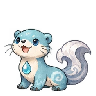
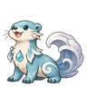

No.003
シズク
潮 通常
胸に透明なしずくを抱く、水辺のパチモン。流れる水の歌を覚えている。
基本データ
| 図鑑番号 | No.003 |
|---|---|
| タイプ | 潮タイプ |
| 進化 | Lv.8でシズルアに進化 |
| 入手方法 | 冒険の最初に選べる相棒の1体（野生には出現しません）。 |
Lv.50の能力値
| 体力 | 278 | |
|---|---|---|
| 物理攻撃 | 162 | |
| 物理防御 | 113 | |
| 特殊攻撃 | 163 | |
| 特殊防御 | 115 | |
| 素早さ | 110 | |
| 命中 | 98 | |
| 回避 | 102 |
冒険中の能力値はレベルに応じて上がります。オンライン対戦の通常レンタルはLv.50で統一されます。
覚える技
| 技 | タイプ | 分類 | 威力 | 命中 | PP | 効果 |
|---|---|---|---|---|---|---|
| 雫の鍵盤 | 潮 | 特殊 | 22 | 100 | 30 | 潮の力を放つ軽い特殊攻撃。確実に当たる。6%で水封にすることがある。 |
| 朝露の交換 | 潮 | 特殊 | 26 | 98 | 30 | 潮の力で生命力を吸う特殊攻撃。与えたダメージの1/4だけ体力を回復する。6%で水封にすることがある。 |
| 小さなとっしん | 無 | 物理 | 22 | 100 | 30 | 体ごとぶつかる軽い物理攻撃。どのタイプにも等しく当たる。 |
| 霧のまもり | 潮 | 防御 | — | — | 15 | 潮の守りで、次に受ける攻撃のダメージを半分にする。素早さに関係なく先に構える。 |
進化の系譜
- シズクLv.8 ▶

シズルアLv.32 ▶ シズナリア
シズナリア
タイプ相性
潮タイプの技は灯タイプに強く（1.5倍）、芽タイプの技を受けると効果が大きくなります。同じタイプの技を使うと威力が1.15倍になります。